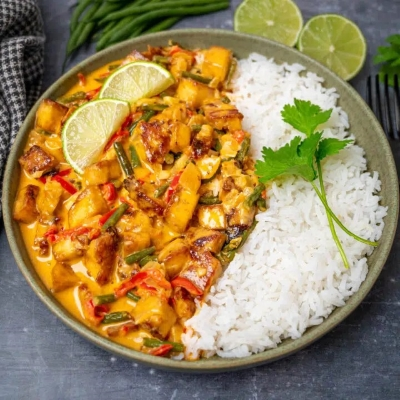

Red thai tofu curry
This comforting dish is so quick and easy that it almost feels like cheating. A weeknight staple that you'll come back for again and again.
Ingredients
- 400g extra firm tofu
- 1 medium yellow onion, finely chopped
- 4 cloves garlic, minced or finely chopped
- 2 tablespoons Thai red curry paste
- 1 tablespoon fish sauce (or soy sauce)
- 1 tablespoon honey
- 1 (400ml) can coconut milk
- 1 lime
- 1 small bunch spring onions, sliced
- 1 large handful parsley or coriander, chopped
- 200g jasmine rice
- 2 tablespoons olive oil (or coconut oil)
Instructions
- Cut or tear the tofu into bite-sized chunks. Cook the tofu however you prefer, e.g. pan-fry or air-fry for 10 minutes. Set aside.
- Begin cooking the rice as per packet instructions.
- Add the oil to a wide-based pan, and bring it to a medium-high heat.
- Add the onion to the pan and sauté for about 5 minutes or until lightly browned. Stir in the garlic and cook for a further 1-2 minutes.
- Stir in the coconut milk, curry paste, fish sauce, and honey. Simmer for about 5 minutes or until thickened.
- Add the tofu and spring onions to the pan. Stir gently, ensuring the tofu is completely coated.
- Halve the lime. With one half, squeeze 1 tablespoon of fresh lime juice into the pan. Cut the other half into segments for serving.
- Stir the chopped parsley into the pan. Serve immediately over the rice, topped with the lime segments. Enjoy!